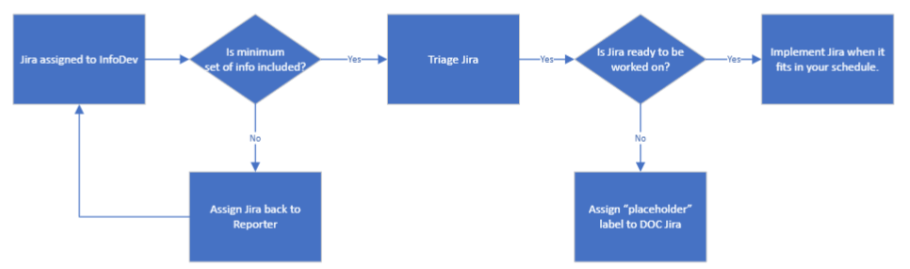
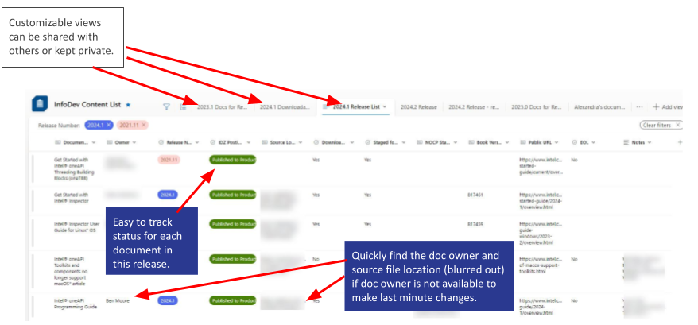
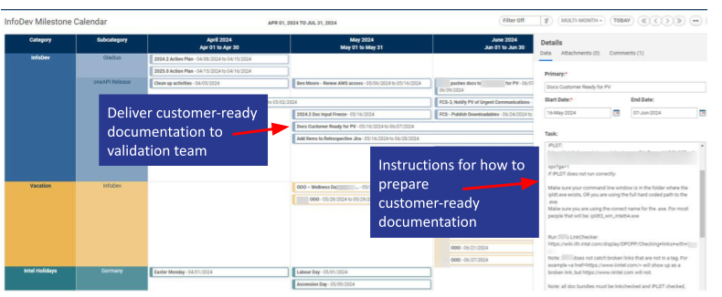

Content Strategy¶
I implemented tools and processes to make improvements such as:
Moved deadlines for Objectives and Key Results so that they don’t conflict with release deadlines.
Submitted documentation to the validation team earlier than required to give them more time to validate and cut the amount of time my team spends investigating and responding to validation requests.
Planning¶
I created this SmartSheet Calendar for our team to see overlap in deadlines for software releases, Gladius tasks (software life cycle), quarterly objectives, and time out of office.
Note
Proprietary information has been blurred out
{kind=link}
Tracking¶
Engineers and product owners assign Jiras to the Information Development (InfoDev) Team. My job was to ensure we have the information needed to implement a Jira, and that the Jira is being worked on by our team when we have the information we need.
{kind=link}
Using a Microsoft SharePoint List, I was able to create an accessible place for Technical Writers as well as stake holders to be able to see the status of a specific document, or see the overall progress toward the release schedule. This list provided these advantages:

Opens quickly in a web browser.
Users can create customized views to show data such as: documents assigned to a specific user, documents for a specific product, overdue documents, completed documents. This data was used to produce indicator reports and balance resources.
Users could be assigned write permissions or read-only permissions.
{kind=link}
Improving¶
After a reduction in workforce, our Product Validation team had to shift their documentation validation timeline to the day before we started publishing. Since validation takes 2-3 days, we were publishing documentation that had not been validated yet.

I implemented a minimum set of documentation standards that enabled our team to deliver customer-ready documentation to the validation team four days sooner than in past releases.
{kind=link}